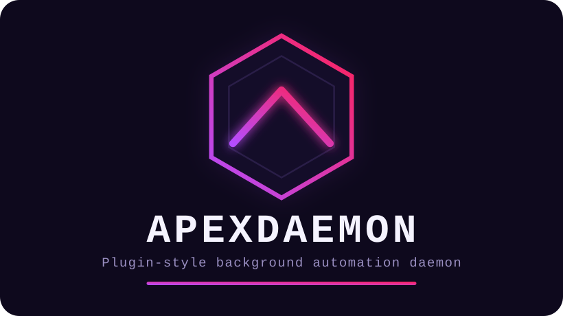

> cat README.md | head
Plugin-style background automation daemon. Each automation area is an
independent module behind one Plugin trait
(src/plugin.rs), individually enabled/disabled in config —
not dynamically loaded, just cleanly separated, since everything ships
and rebuilds together anyway.
> apexdaemon --list-plugins
theme-sync
Watches ~/.local/state/omarchy/current for a theme switch,
converts colors.toml into a cybercore CYBERGRID theme file.
Writes land in a dedicated omarchy-live family, kept
separate from the 72 hand-curated themes.
fleet-health
Polls configured services (TCP / HTTP / systemd-unit checks) and
runs a start_cmd if one's down. Never kills or restarts
an existing process — start-only, alert-only otherwise.
security
Watches a configured systemd unit (vortexwall today,
swappable to fail2ban via config alone) and tails its
journal for ban events. Observe-and-alert only; never starts the unit.
vault-backup
Auto-commits a dirty vault repo on an interval, with an opt-in push.
Push runs with GIT_TERMINAL_PROMPT=0 so an SSH remote
needing a passphrase fails fast instead of hanging a headless daemon.
repo-housekeeping
Reuses cyberfleet's own repo list when present, checks local
dirty/ahead/behind status via git2, fetches
non-interactively, and polls a small watchlist via gh
for state changes.
1. Configure
cp config.example.toml ~/.config/apexdaemon/config.toml
2. Try it dry
cargo build --release ./target/release/apexdaemon --dry-run # see what it would do first ./target/release/apexdaemon --list-plugins
3. Run it as a --user service (no root needed)
systemctl --user link ~/tools/daemons/apexdaemon/apexdaemon.service systemctl --user enable --now apexdaemon